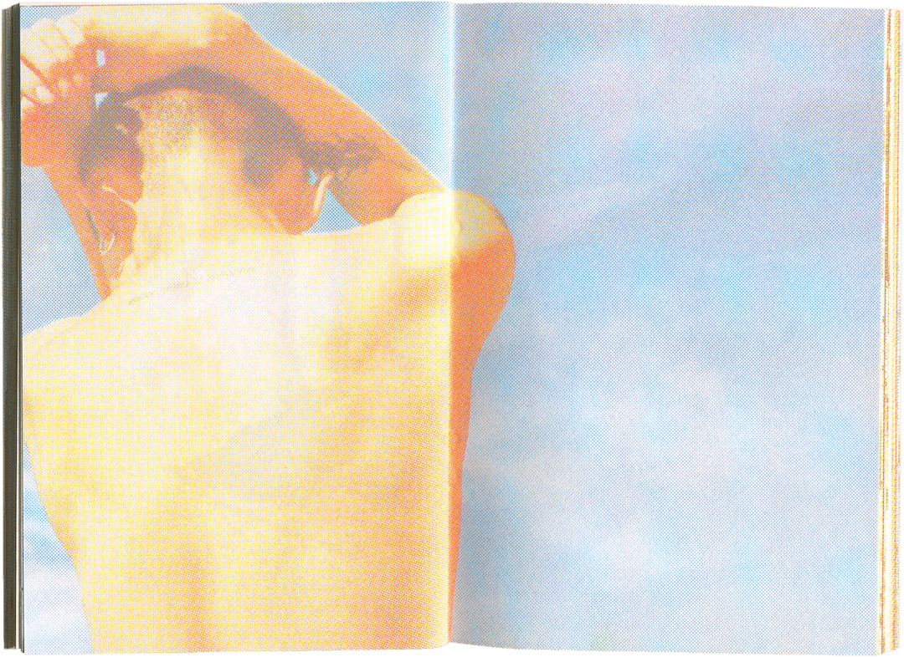
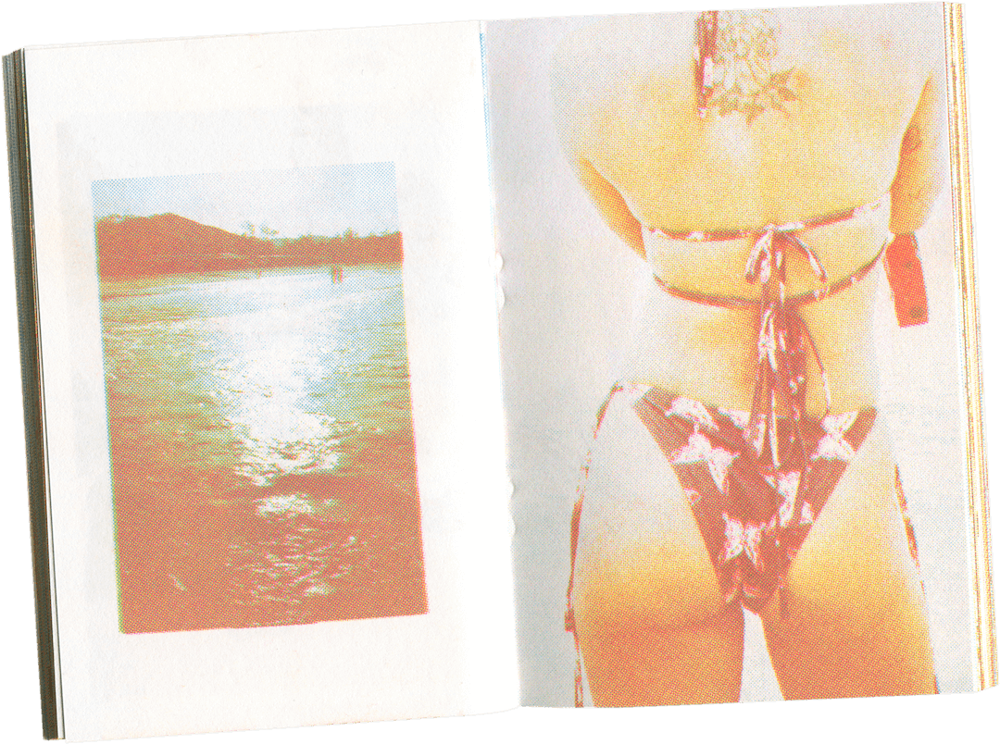
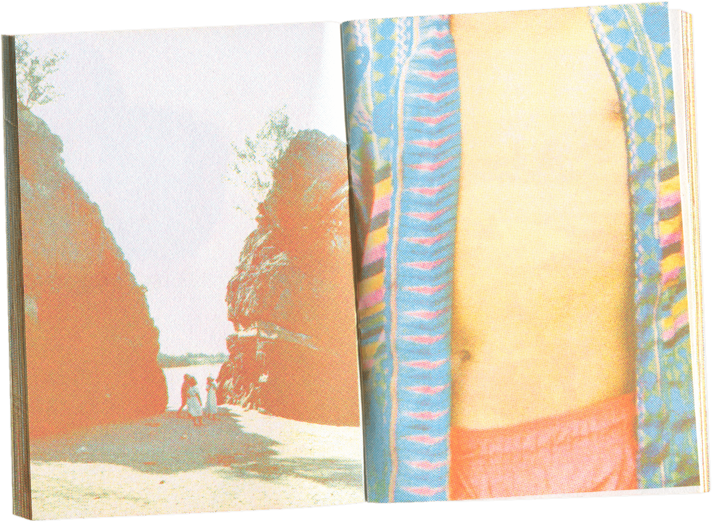
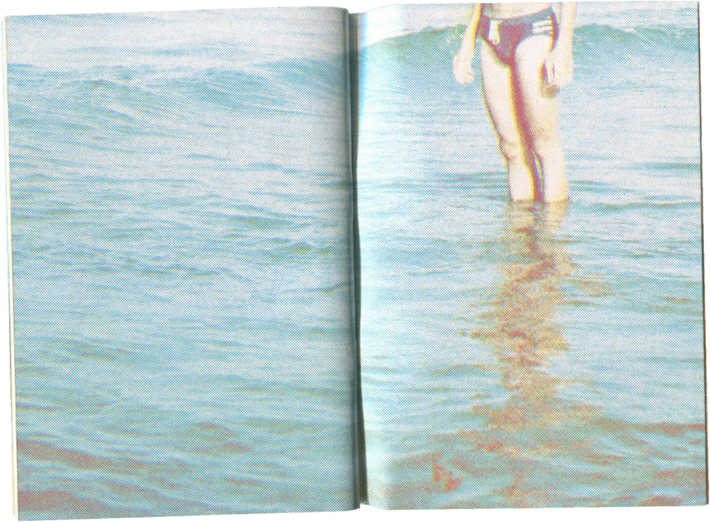
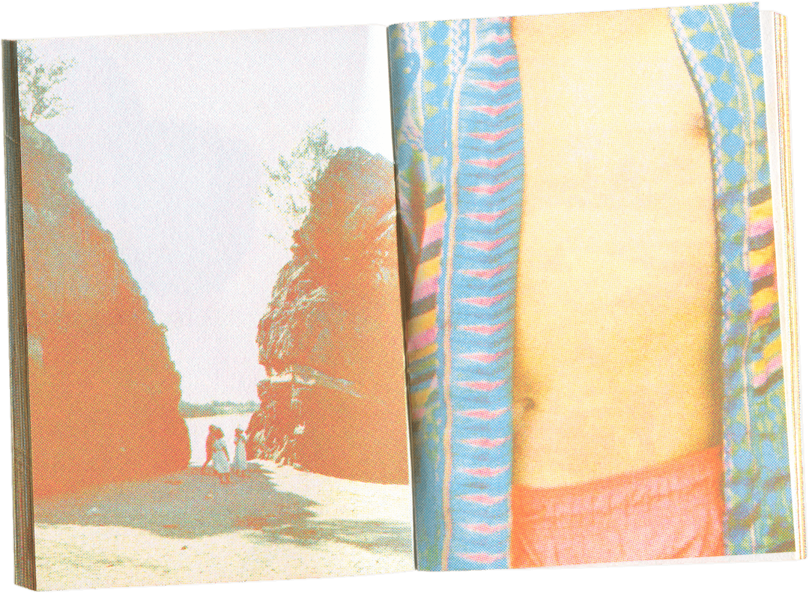
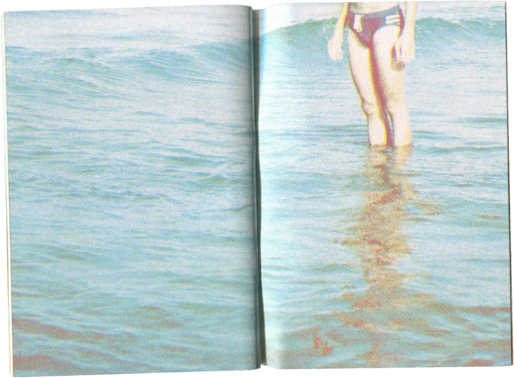
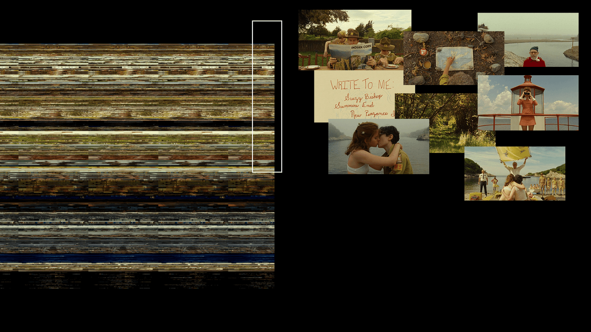
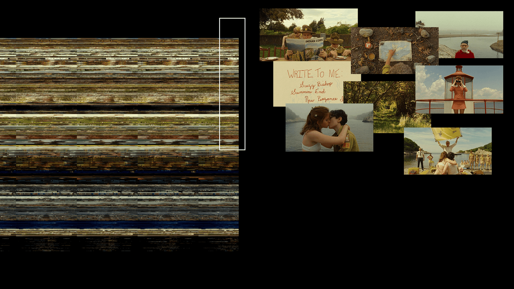
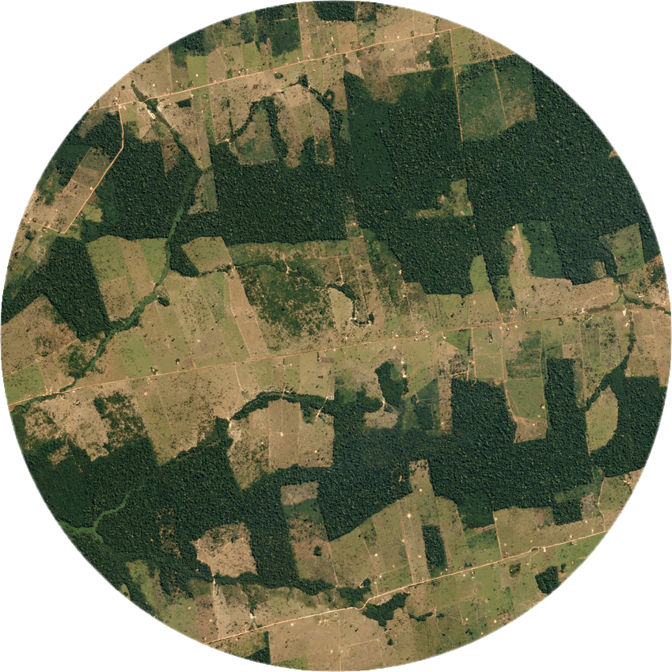
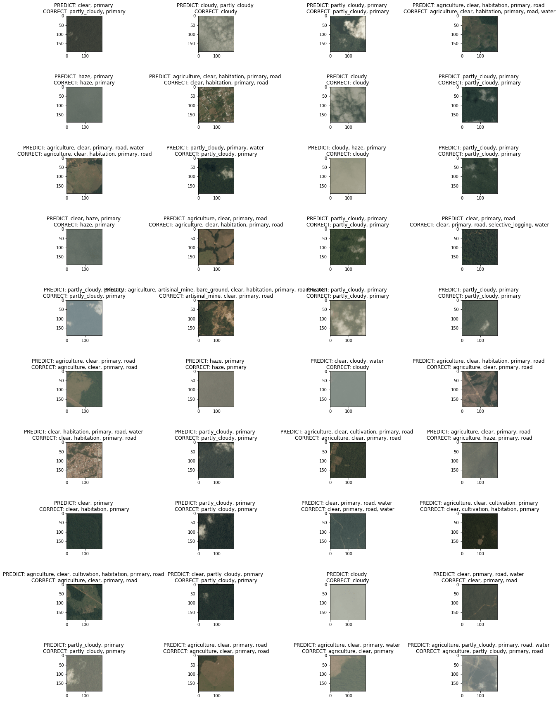

Nhan is a technologist and educator. Emerged from photography, his projects
explore the application of coding in len-based practices. He makes photos, zines, and prints as
a shelter for his memory, dream, and fantasy. His works have been featured in Ho Chi Minh City,
New York, Bangkok, and Kuala Lumpur.
Nhan is a mentor of the Processing Fellowship 2024. He is also a former fellow of the
Processing Fellowship 2023.
IG @ nhaninsummer
Gmail @ nhaninsummer
(2024) Âm tiết tiếng Việt ⎯ Vol. 1
Âm tiết tiếng Việt (Vietnamese syllable) is a collaborative research of Yui Nguyễn (researcher), Nhân Phan (technologist), and Ngọc Võ (visual designer) to deconstruct and understand Vietnamese language from its syllables. From that, we reflect on how Vietnamese language invokes image, feeling, and emotion through its pronunciation.


(2024) Âm tiết tiếng Việt ⎯ Vol. 2
Âm tiết tiếng Việt (Vietnamese syllable) is a collaborative research of Yui Nguyễn (researcher), Nhân Phan (technologist), and Ngọc Võ (visual designer) to deconstruct and understand Vietnamese language from its syllables. From that, we reflect on how Vietnamese language invokes image, feeling, and emotion through its pronunciation.


Try it yourself at https://tiengviet.netlify.app/


(2024) 和
On the first days of the year, Vietnamese go to temple to ask for a word. A simple, single, yet
intricate word that marks our intention for the whole year ahead.
Many ask for “Lộc — 禄” to call for abundance, some ask for “Nhẫn — 忍” to remind themselves
about the
value of steadiness.
I always ask for “Hoà — 和”.
Hoà 和 is the state of this universe where everything aligns.
— “Thiên thời, địa lợi, nhân hoà” (As above, so below).
Hoà 和 calls for the mediation between human and non-human.
Hoà 和 calls for Peace.
Based on that one word "和", this work-in-progress attempts to create a meditative space from
past images of sacred places I have been to.

{kind=link}
{kind=link}
{kind=link}
curtain draft
{kind=link}


(2023) Sensory Narratives

“Thu ăn măng giá, đông ăn trúc.
Xuân tắm hồ sen, hạ tắm ao.”
- Nguyễn Khuyến
Sensory Narratives is a curriculum that Nhan developed during his fellowship with Processing
Foundation in 2023.
The course guides students to use creative coding as a way to manifest the harmony between human and
our
surrounding nature.
The curriculum is designed to nurture individual artistry while offering a cohesive framework to
develop programming skills. Beyond its role as teaching material, "Sensory Narratives" also reflect
his artistic
spirit of being oneness with the world.
Since the early day of life, human is at one with nature. Our body senses, reacts, and
reflects
upon the nature that we are living in constantly. In this nowadays digital landscape, those
emotional rapports seems to fade under the shadow of the new virtual technology. Can we mediate
the
relationship between human and nature via technology? This course investigates the vivid world
of
signal around us - image, sound, and data; and use them as inspiration and resource for our
creative
practice.
Toward the end of this course, students learn to use p5.js to build a cohesive system that
observes,
documents, and visualizes the changes that are happening in their nature. Students also learn
to
integrate programming with other creative practices to furthermore manifest their artworks in any
new formats.
The course is built upon 4 units with increasing difficulty:
⤷Unit 1: Connect ⎯ to play with mouse and keyboard interaction while gaining familiarity
with basic
Javascript syntax.
⤷ Unit 2: Transmit Vision ⎯ to understand the world through images while practicing using
arrays and
functions.
⤷ Unit 3: Transmit Sound ⎯ to make artworks that react to sound while getting to know
object-oriented programming, animation, and vector & forces.
⤷ Unit 4: Transmit Data ⎯ to control our canvas using external data while learning about API
and
making our first data-driven application.
Unit 1: Connect
By the end of this unit, we make an interactive letter and send it to our loved ones. In this very intimate format of a letter, we use technology as a bridge to deliver our thoughts and emotion. The letter can be made using material that we learnt in class (shape, color, typography) and elaborated with animation and interaction via mouse and keyboard.
SAMPLE WORK
poem by Ocean Vương
touch to read
the year is 2017,
scorching japan's summer
i'm with him in the shower
sun, everywhere.
SUGGESTED SYLLABUS
Unit 2: Transmit Vision
Upon the connection with computer we have established in Unit 1, we continue to build a more sensory interaction: seeing. Can computer see things as the way human do? In this unit, we learn to apply coding into capture and analysing images. We also learn to program a project on a more professional level, away from pure online editor. For this unit project, students will use camera and other recording devices to capture the essences of where they are living. We incorporate programming to highlight those essences either through manipulating the images' structure or semantics.
SAMPLE WORK

All the strangers I met on Bờ Kênh Nhiêu Lộc”, is a reflection of myself living in the overwhelming Saigon, where I ride 12km every day to work. It is a still film with a huge cast trying to get through the screen yet no one is the main character. To make this, I performed object detection on a dashcam driving through Saigon. The model extracted drivers and placed them on the mural.
SUGGESTED SYLLABUS
Unit 3: Transmit Sound
Using code as an instrument to amplify the vivid world around us. In this unit, we learn to visualize sound using programming. We focus on animation and the use of algorithm and vectors on enriching our animation. For this unit project, students go out to their neighborhood and record a soundscape. Then using programming to amplify the subject of the soundscape in visual.
From 2023 footages in my phone, “i let the fish into the ocean” is a meditative montage on my intimacy with nature ⎯ water, air, and biological bodies. ⎯ through the way we flow, intertwine, and harmonize this school of lives together.
Leave this page for that realm.
SUGGESTED SYLLABUS
Unit 4: Transmit Data
Human practices require the ability of analyzing signals that we can neither see nor hear. Fishermen relies on currents, winds, and inherited knowledge to navigate. Farmers relies on rain level and temperature to adjust their harvest. This unit will guide students to design a cohesive system from devices and bodies of code to sense and make sense of surrounding data that beyond our seeing and hearing.
SAMPLE WORK
to be updated
SUGGESTED SYLLABUS

I dedicate this curriculum as an artistic tribute to my homeland - Southern Coast of
Vietnam.
It teaches me how to become a human and how to always look back into what nature and what my
ancestors have always
been giving me.
Years passed by but I am still that little boy who walked barefoot on the beach
collecting seashells for his
school project. I hope more of us would go back to that precious lessons from the nature.
Here's to my beautiful land.
Here's to all the teachers on my beautiful land.
(2022) Beach Pocket

First thing I said when a guy took my shirt off was always ⎯ “Am I too skinny?”
From 2019 to 2022, my best friends and I made occasional getaways to the beaches in Vietnam. There we swam, sunbathed, read, danced, and radiated under the sun. There I found comfort in my own skin. There I realized the beauty of our shapes. The whole process is a healing journey for me.
This pocket notebook includes all the portraits and self-portraits that I documented during the time.
 {kind=link}
{kind=link}

 



{kind=link}
{kind=link}

“My boyfriend once said that I was so tiny
That he could carry me in his pocket anywhere
So put me in your pocket
Use me as your time goes by
Use my body as your late-night canvas
Write on me
Compose on me
Fast on me
Slow on me
Release on me
Spit on me
Piss on me
Bleed on me”
✣＊✣
Produced by wedogood.
64 pages on risograph using aqua, yellow, flourescent pink.
(2022) ガイジャ別府

Every year when the cicadas start to sing, I miss Japan dearly, as if a part of myself had been buried under the Minami Ishigaki park, where we hung out by the swings, singing, and smoking.
This summer, as the cicadas are singing again, I invited Cao Mieu to join me in a conversation about our Japanese memoirs. But instead of texts, we would reply to each other with artworks. Every page is a response to the previous. All communication takes place only within these pages.
I lost my residence card years ago. Mieu still has hers, so she will hereby board the page first.


(2022) Live. Laugh. Dick(s).


Back in April, wedogood invited me to join their zine with the theme of “Love Machine. Machine Love”. And all I brought was erotism, fantasy, and re-imagination. This poster is a stand-alone version of my work in the zine. More than a collection of quirky-looking toys, It reflects our current perception of sex toy design (dildos and butt plugs in particular) while suggesting new boundaries for toy design.


After being trained with 3000 photos of toys, the generative model clearly gets the idea that a sex toy needs to be pointed (of course). But it takes the idea further by re-imagining toys with multiple heads, and toys with irregular shapes or shapes that are different from cylinders. Several generated samples also include toys that are bound together since e-commerce often places their toys next to each other in product photos. If such an arrangement stimulates the buyer, then why not include them in the real product design? Many of the generated samples also propose getting rid of the inside of the toys as it is not a significant feature. They suggest void, disjoint parts, transparent material, and anything else but the common solid shape. Pleasure has its own curiosity. And maybe toys for pleasure should also be more suggestive, rather than adaptive.
This project is built on my custom GAN model, inspired by StyleGAN2. The StyleGAN2 architecture itself is gigantic. To afford training, I made multiple adjustments in the architecture, including downsizing the output image size to 128x128. This seriously damaged the print quality but Risograph helped me bypass that. I also divided the training into multiple sessions + used the Tensorflow Data Dataset & Tensorflow Record to optimize the whole training speed. All are for this project to be run on the free resource of Google Colab, which has a limited quota every day. So much engineering just to have more dicks while paying less ü•¥


WHY RISOGRAPH?
Generative art is not for size queen. Artworks generated from ML model struggle to have
a good
resolution. A simple image of 300x300 would take 90,000 units when being flattened. It means
that a larger output images come with a larger cost of computation. It often requires days of
training on expensive GPU. When it comes to printing, this limit in output results in pixelating
details, blurry edges, and inconsistent separation between object and background. Not only that,
generative images oftentimes have the checkerboard effect, as a result that the machine
“painted” each pixel independently and lack of perception of the image as a whole.
In order to produce this digital artwork in high-quality print (A3), we first put the 128x128 generated images through a half-toned treatment - a technique to simulate the image tone through dots. By carefully adjusting the dot size, we gave the pixelated images a sharper optic illusion in general. A subtly similar pair of aqua ink and purple paper were then chosen to let the half-toned dots blend smoothly with the background. The various size of dots + different % of ink embrace the blurry edge. The aqua ink also expands optically when we tilt the poster to different light direction. Object edges “fade” gradually into paper like chalk. The drawback of pixelating and not having sharp edges is now a compliment toward the initial inspiration of stains.


Crossing between multiple forms ⎯ from photographs, to numbers, to logic, to a new form of photographs, then comes alive as a print. A journey from modern computation to a long-lived printing technique; from abstract to physical, with which we can see, can touch, and can interact. I think it is beautiful.


background: IG/manual_singularity
(2021) Watching Wes Anderson Without Watching Wes Anderson
{kind=link}

{kind=link}
{kind=link}
In 2021, Saigon went dormant under COVID lockdown. No one can set foot beyond their door. So did I and my housemate. We ended up doing a marathon of Wes Anderson movies. Going through all his movies was like walking on a train, that moving so fast, that all the beautiful scenes become color running across my window. Color is the main actor in his movies.
The normal way to watch a movie requires audiences to sit through frame by frame. A movie presents itself linearly with time with visual elements built up on top of each other. This project challenges that concept and aims to understand the visual landscape of Wes Anderson movies through just one single look.
To achieve that, each frame of the film was flattened from a rectangular shape (720x1280) to into a long strip (1x921,600). Then, all the strips were stacked on top of each other to create the final artwork. As a result, vertically, from top to bottom, we are “watching” the movie from the beginning to the end. Horizontally, from left to right, our eyes are moving zig-zag in one scene of the movie (left to right, top to bottom).
In the end, this project reveals how Wes Anderson uses colors to create the world surrounding his characters, and how that colorful world flows according to his characters' emotion.
1/ The Life Aquatic with Steve Zissou (2004)
One of the first Wes Anderson’s, dated back in 2004. The movie's color is everything but its name “aqua”. Most of the scenes are in a warm, earthy tone while the color aqua is used as highlights scattered throughout the movie.
When looking closer, I found out that aqua was used specifically as a way to revert the movie's emotion - from the scene where Steve met his wife, to the pirates’ raid, and to his son’s last moment. The color aqua sets the boundary of bright sunshine and dark ocean, surface and below, inward and outward, carefree voyage life and emotional tension. It makes the peak and valley in Steve Zissou’s life.
{kind=link}
2/ Moonrise Kingdom (2012)
Moonrise Kingdom is divided into two distinctive palettes: before the storm and after the storm. The “before the storm” embraces the warm colors of yellow, green, and brown, with scenes mostly shot in bright sunlight while the “after the storm” rages in cooler shades of blue and teal, with lots of scenes without the sun or even in the dark.
 

{kind=link}
{kind=link}
The transition from the bright color to the darker one doesn’t follow the change of nature (the arrival of the storm) in the movie. It, however, follows the transition of the characters’ emotions. The change started right after Sam and Suzy got caught by the beach. The following scene of Suzy’s conversation with her mom immediately takes the sunlight out and drowns the movie in the cold tub. Perhaps, the movie’s real storm already raged after that conversation.
{kind=link}
3/ The Grand Budapest Hotel (2014)
The movie has many noticeable black columns that run vertically. Their widths vary in the beginning, then become consistent as the movie goes on. These black columns are created from the black margin of the frames. Different size of black margin signifies different screen ratios. In fact, Wes Anderson intentionally used different screen ratios to mimic different eras’ cinematic styles. The 80’s ⎯ 1.85 : 1, The 60’s ⎯ 2.40 : 1, The 30’s ⎯ 1.37:1.

The movie is clearly divided into blocks of colors. Each group of scenes is in one distinctive palette of color. The transition of color is both more extreme and playful than in his early works - Moonrise Kingdom and The Life Aquatic of Steve Zissou.
{kind=link}
4/ Isle of Dogs (2018)
Continued with the idea of using colors to define space for characters’ emotions, Isle of Dogs used extreme colors, black and white, to depict two different groups of scenes: the trash island and the city hall. Yellow strips that run horizontally between them are Tracy Walker. She brings light to the revolution of Atari and the dogs.

Several groups of scenes in Isle of Dogs maintain a fixed layout, with both characters and the camera making minimal moves. For example, in the white strip area in the middle, we can see that the black area (the characters) stays in place for several continuous scenes. This can be the effect of stop motion, where continuous scenes have very subtle changes, so the audiences can really focus on such change and the “stop-motion delay” between the change. For example, the making sushi scene. However, when considering other movies by Wes Anderson, The Grand Budapest Hotel also has this same pattern. Many scenes in the movie, especially scenes where characters discuss, have very minimal camera movement. So rather than highlighting the effect of stop motion, in these scenes of Isle of Dog, Wes Anderson is leveraging stop motion to achieve his own distinctive technique. They play out so well and compliment each other.
{kind=link}
Isle of Dogs

The Grand Budapest Hotel
Inspiration
(2020) Enhanced Super Resolution GAN on Tensorflow 2

VISION2020 aims at recovering a high resolution image from a low resolution one. The project is based largely on the excellent research of Xintao Wang, et al. on ESRGAN (2018) and their implementation using Pytorch. Inspired from the research, my version of ESRGAN is optimized and built entirely on Tensorflow 2.0. It successfully resizes the image up to x64 on square area.
Single image super-resolution (SISR), as a fundamental low-level vision problem, has attracted increasing attention in the research community and AI companies. SISR aims at recovering a high-resolution (HR) image from a single low-resolution (LR) one. Since the pioneer work of SRCNN proposed by Dong et al., deep convolution neural network (CNN) approaches have brought prosperous development. Various network architecture designs and training strategies have continuously improved the SR performance.
The Super-Resolution Generative Adversarial Network (SRGAN) is a seminal work that is capable of generating realistic textures during single image super-resolution. However, the hallucinated details are often accompanied with unpleasant artifacts. To further enhance the visual quality, we thoroughly study three key components of SRGAN - network architecture, adversarial loss and perceptual loss, and improve each of them to derive an Enhanced SRGAN (ESRGAN).
In particular, we introduce the Residual-in-Residual Dense Block (RRDB) without batch normalization as the basic network building unit. Moreover, we borrow the idea from relativistic GAN to let the discriminator predict relative realness instead of the absolute value. Finally, we improve the perceptual loss by using the features before activation, which could provide stronger supervision for brightness consistency and texture recovery. Benefiting from these improvements, the proposed ESRGAN achieves consistently better visual quality with more realistic and natural textures than SRGAN.

fig1 ⎯ (x4 per dimension) generated image successfully retains small detail like the strip at the shoulder area and the human head.

fig2 ⎯ (x4 per dimension) Natural features like eyes are well reconstructed.

fig3 ⎯ (x8 per dimension) Double challenging, then model successfully reconstruct pattern and lines.

fig4 ⎯ (x8 dimension) Letters are brought back to vision.
Full project code is available on Github
(2020) Vietnamese Handwritten Optical Character Recogition
Optical Character Recognition is one active field that bridges between computer vision and natural language processing. As much as the field emerges within machine learning community, it still performs poorly on local language, including Vietnamese with our distinctive symbol (ễ, ẩ, ứ for example). The lack of data is one of the main reason behind it. In 2018, Cinnamon AI aimed to solve that challange by hosting a hackathon with a Vietnamese handwritten dataset. It includes all the address written in Vietnamese. The model can be immediately apply in post service to alleviate the need of manual input.
All code of this project can be found on my Github üëæ

❊ RESULT ❊ My project successfully achieved Character Error Rate: 0.04 Word Error Rate: 0.14 Sentence Error Rate: 0.82
The hackathon's winner score is 0.1x on the Word Error Rate. Other metric results were not disclosed.
❊ SAMPLE PREDICTIONS ❊ T = True Label P = Prediction

❊ IMAGE PREPROCESS ❊ The preprocess was built mainly on OpenCV with 3 phases 1/ Thresholding 2/ Resize to 128x1024 3/ Remove Recursive (reference to A. Vinciarelli and J. Luettin) (Before - After)

{kind=link}
❊ MODEL ❊ CRNN + CTC Loss is used to solve this challenge. CNN blocks with skip connections (inspired by ResNet50) are used to extract the features from the input image. The extracted feature map will be then passed through the LSTM layers.

Training Log

(2019) Understand The Amazon From Above
This project is an entry of the corresponding Kaggle competition.
Every minute, the world loses an area of forest the size of 48 football fields. And deforestation in the Amazon Basin accounts for the largest share, contributing to reduced biodiversity, habitat loss, climate change, and other devastating effects. But better data about the location of deforestation and human encroachment on forests can help governments and local stakeholders respond more quickly and effectively.
This analysis uses Deep Learning to classify the spatial images of the Amazon forest taken by the satellite. From that, it hopes to shed a light on understanding how the forest has change naturally and manually. Thus, help preventing deforestation.
The project is built on dataset from the Kaggle competition in 2016. It contains more than 40.000 images, taken by Planet using sattelites.
Planet, designer and builder of the world’s largest constellation of Earth-imaging satellites, will soon be collecting daily imagery of the entire land surface of the earth at 3-5 meter resolution. While considerable research has been devoted to tracking changes in forests, it typically depends on coarse-resolution imagery from Landsat (30 meter pixels) or MODIS (250 meter pixels). This limits its effectiveness in areas where small-scale deforestation or forest degradation dominate.
Result
The project successfully got the score of 0.90 on the official test set.


Challenge
1️/ Multi-label: Each image is labeled with multiple tags (at least 2, at max 9). The tags fall into 17 categories, which are the forest landscape types. Since the tags in each label are mutually exclusive, they are treated as multiple binary classification problems. Thus, binary cross-entropy are chosen to be the loss function.
2️/ Imbalance: The dataset is severely imbalance with tags like Primary or Agriculture appear in 90% of the dataset. While other tags like Blooming or Conventional Mine can only be seen in less than 500 observations (even less than 100 for Burn Down).
In the first base-line experiment, the model was totally bias toward the major tags. It predicts the major tags to appear in every data and almost never made a prediction with the minor tags. To tackle the problem of imbalance dataset, evaluation metrics must be chosen carefully. F2 is chosen to be the main metrics to evaluate the training. It watches over the harmonic mean between the Precision and Recall while favors Recall specifically. In other word, it is the attempt to reduce the number of False Negative, where the model fails to identify the absence of a tag.
3️/ Optimization: 400.000 images, a CNN model, and Google Colab's limited resource do not seem to mix well together. The training was slow at first and interupted often. Several improvements, mostly on the Tensorflow pipeline, were conducted to speed up the training: Using TFRecord to convert the raw images into byte-like data to reduce the amount of time spending on reading data from their paths.
Using tf.data.Dataset with shuffle, map, batch, prefetch to optimize the reading data process by redistributing the tasks for agents to work concurrently, thus, avoid bottleneck. An attempt to use cache was also made but failed due to the limited RAM.
Processing image with Tensorflow: The dataset contains images in JPG - RGBA. The built-in decode function tf.io.decode_jpeg only works on 1 or 3-channel image. Attempt on encoding a JPG RGBA image returns black black and black. We need a tensorflow encoding function to work in this part because the pipeline is built entirely on Tensor for the optimization purpose. To tackle the problem, the raw images were first read by Matplotlib then converted into byte-like and wrote into TFRecords. When reading the data from TF Record, instead of using the built-in decode image function, we use tf.io.parse_tensor following with reshaping.
Sample Prediction
{kind=link}
Full code of this project can be visited at Google Colaboratoryüëå